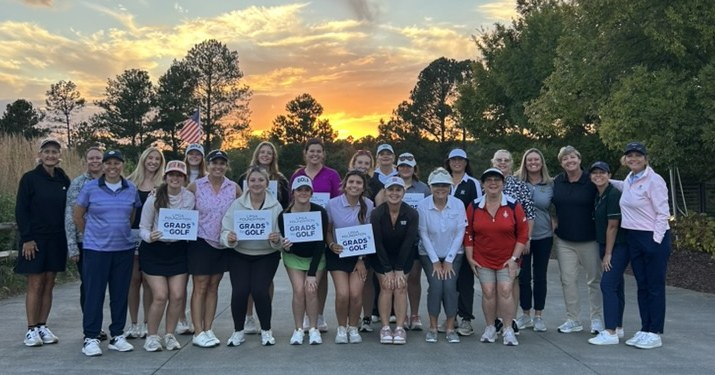
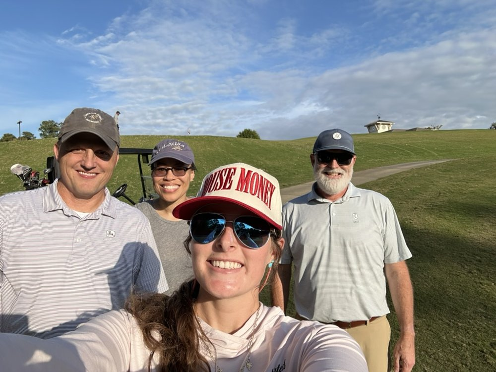

ABM women learned business golf through the LPGA and John Deere

Grads to Golf is a five-week program from the LPGA Foundation and John Deere. It gives college women the golf skills and confidence to join corporate and business golf outings, so they feel comfortable saying “yes” when a networking invitation comes on the course.
Ten NC State women
ABM students Lindsey Hockstra, Emma Raynor, Gabriella Herrera, Emma Sanders, Mary Springer, and Lily Currie, along with Alleigh Johnson, Emma Sevier (turfgrass), Laura McPherson (graduate student), and Monica Proud (social sciences).
Along with weekly lessons, the group toured NC State’s turfgrass facility and joined a roundtable at John Deere. The program ended with a 9-hole scramble, and the local LPGA chapter, John Deere professionals, and NC State staff came out to play alongside them.

“I don’t want to miss out on opportunities”
ABM junior Lindsey Hockstra tried to get in last year, but the program filled up, so she watched for the application this year. “I wanted to grow my golf game and be able to say ‘yes’ to opportunities on the course,” she said. “I have seen how big of an impact golf has in the agricultural business industry.”
What she got out of it: “Valuable golf skills, connections with others learning how to play, and great networking connections with industry professionals from Deere.”
Watch for next year’s application
Lindsey heard about the program through an email from an LPGA professional with an application. Watch for announcements from the LPGA Foundation, John Deere, and NC State career and professional development channels. “If you have the opportunity to participate, I highly recommend applying!”
‹ All issues